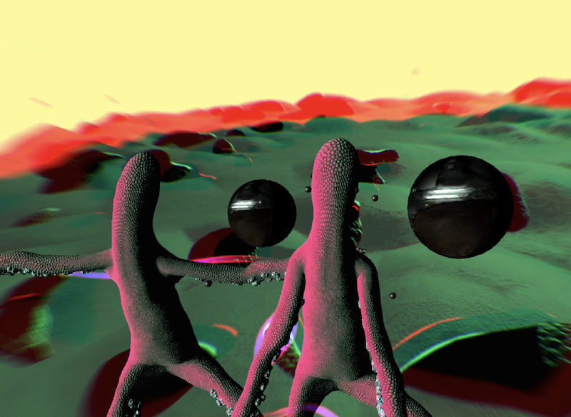
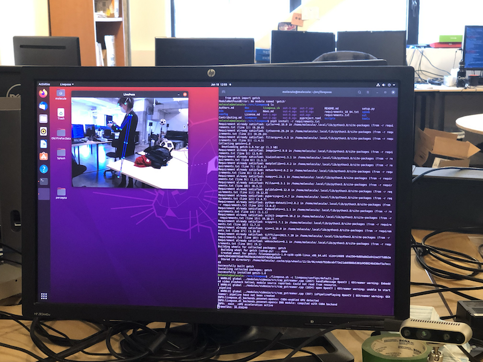
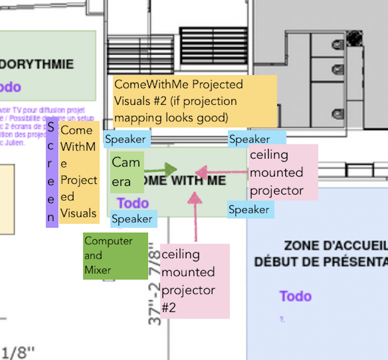

Come With Me
Qui ne s'est jamais senti seul·e?
ComeWithMe est une exploration ludique et virtuelle des espaces entre les gens. ComeWithMe traduit vos mouvements physiques dans un étrange monde virtuel fait de formes sculpturales animées et d'interactions virtuelles. À l'aide d'une caméra, d'une détection du corps par intelligence artificielle (LivePose), de projection cartographiée (projection mapping) et d'un environnement sonore immersif, ComeWithMe explore comment on se rapproche les un·e·s des autres, comment on se lie, et comment, parfois, on n'arrive pas à se lier aux gens qui nous entourent.
ComeWithMe prolonge mes œuvres précédentes (Closer, Common, Follow) autour des thèmes de la connexion et de la collaboration, et invite les gens à se réunir et à jouer dans l'espace physique et virtuel.

Pourquoi ça compte : technologie et lien humain
Depuis une vingtaine d'années, on a vu monter les géants des médias sociaux, et le fait de devenir « ami·e » ou de « se connecter » avec quelqu'un s'est réduit à un clic. Aujourd'hui, on est connecté·e·s et surveillé·e·s sans relâche par la technologie. Sous cette connexion de surface grandit une solitude. ComeWithMe explore les relations à travers la vision par ordinateur, un domaine de l'intelligence artificielle qui nous aide à tirer du sens des images d'une caméra.
ComeWithMe pose la question : comment êtes-vous relié·e aux gens autour de vous? Comment tendez-vous la main vers les autres, et comment tendent-ils la main vers vous?

Vivre ComeWithMe : à quoi ça ressemble
ComeWithMe prend place dans un espace physique. Un monde virtuel étrange est projeté sur les murs qui vous entourent, créant une sensation d'immersion. Vous êtes représenté·e par un avatar aquatique insolite. Quand vous bougez les bras, vous remarquez que les tentacules de l'un des avatars ondulent eux aussi. Vous pouvez déplacer votre avatar dans le monde en bougeant votre corps, et créer des liens temporaires, comme des cordes, avec les autres en vous rapprochant d'eux et en tendant la main vers eux. Vous pouvez attraper ou esquiver des sphères volantes. Avec les autres, vous naviguez dans ce monde étrange.
Résidence au Metalab
J'ai réalisé ce prototype de ComeWithMe pendant une résidence de six mois au Metalab de la SAT, en 2022, avec l'outil de détection de pose à code ouvert développé par le Metalab (LivePose) et l'outil de projection cartographiée à code ouvert (Splash). J'ai toujours adoré les résidences. Il n'y a pas de meilleure façon de s'immerger dans une communauté et de faire partie d'un monde que d'y plonger pour de vrai.

Je rêve de développer ComeWithMe plus loin, par une expérimentation plus poussée.
Pour l'instant, ComeWithMe est une installation ludique et immersive, projetée sur deux murs adjacents de l'aire d'installation, ce qui donne un sentiment visuel d'immersion. Une caméra spéciale de profondeur LiDAR est pointée vers l'aire. Des haut-parleurs sont disposés tout autour de l'installation, créant un paysage sonore spatialisé.
Sans participant·e·s, ComeWithMe est un monde solitaire, baigné d'une douce lumière violette, de formes organiques discrètes évoquant des plantes, et d'une musique douce aux longues réverbérations.
Quand les participant·e·s entrent dans l'aire d'installation, ComeWithMe prend vie. Chaque personne présente est représentée à l'écran par un « personnage » humanoïde, vibrant et organique, qui bouge ses membres en même temps qu'elle et flotte dans le monde immersif, comme un avatar virtuel.
Lorsque les personnages tendent la main vers des choses dans le monde virtuel, des cordes fluides jaillissent de leurs mains. Quand deux participant·e·s tendent la main l'un·e vers l'autre, ils et elles se retrouvent relié·e·s par des brins de corde multicolores qui ondulent, accompagnés de vagues mélodiques de son ambiant.
Les participant·e·s cherchent à tisser ces liens (ces cordes numériques ondulantes) en tendant la main les un·e·s vers les autres. De plus grands groupes peuvent se former, ou les gens peuvent se regrouper par petites grappes. En tendant mutuellement et à répétition la main, les participant·e·s renforcent des liens qui, autrement, se défont visiblement et de façon audible avec le temps. Ce délitement est lent et doucement rythmé, invitant les participant·e·s à un mouvement tout en douceur, proche de la danse.
Deux sortes de petits objets sculpturaux passent périodiquement près des participant·e·s : certains sont vifs et pointus, d'autres sont arrondis et pulsent. On évite les objets pointus, car ils rompent les liens et retirent temporairement toutes les couleurs d'une grappe. On tend la main vers les objets arrondis et pulsants, car ils libèrent de délicieuses coulées de couleurs et de sons.
Un paysage sonore ambiant et immersif offre une trame de fond qui se transforme subtilement au fil des liens qui se tissent et se défont.
Chaque groupe de participant·e·s apporte sa propre présence relationnelle à ComeWithMe; aucune rencontre ne se ressemble, parce qu'au fond, l'œuvre explore l'espace entre des personnes précises, à un moment précis. Cet espace, je le vois comme un espace aux possibilités infinies. Comment fonctionne-t-il? Comment peut-on l'activer? Que se passe-t-il quand tout un réseau de ces espaces s'anime? Qu'est-ce qui change, hors de nous et en nous, quand on se sent relié·e aux gens autour de nous?
Objectifs
Après avoir développé un prototype de ComeWithMe en 2022, mes objectifs pour 2023 portent sur une expérimentation plus profonde. C'est merveilleux d'avoir un prototype qui fonctionne, parce qu'à partir d'ici, chaque direction est une amélioration.
Mon intention, c'est d'utiliser mon prototype actuel de ComeWithMe comme échafaudage et terrain de jeu pour une recherche sur le lien, tout en expérimentant avec les technologies et les outils du Metalab. Le projet pourrait changer radicalement au fil de mes expérimentations, de mes prises de risque et de mes apprentissages.

Accessibilité
Je tiens à rendre ComeWithMe accessible au plus grand nombre de personnes possible. J'explore l'accessibilité en testant l'œuvre avec des publics variés, et je prends des décisions de conception en conséquence : la vitesse ou la lenteur, un contrôle indulgent (plutôt que précis), le fait de transmettre l'information essentielle à la fois par le son et par l'image (pour qu'on puisse participer avec l'un ou l'autre seulement), et la réduction de la charge cognitive. Cela dit, l'accessibilité est un processus continu, qui n'est jamais terminé.
Logiciel libre
ComeWithMe utilise des outils à code ouvert développés par le Metalab de la SAT : LivePose et Splash.
Communauté
Mon travail se fait toujours en communauté. J'aime apprendre et transmettre à mesure que j'apprends. Le prototype, c'est moi qui l'ai fait, mais avec le soutien de ma communauté. Un immense merci à Julia Evans (qui m'a aidée avec l'OSC), Steven Sych (art technique et mise en beauté), Kristian North (conception sonore, pour que tout sonne bien), Jonathan Carroll (qui m'a enseigné Unity), l'aînée Nina de Shane, Ida Toft, Mike Daoust (aide avec Unity), Adam Streck (aide avec Unity), Aaron Levin, Matthew Gooding et Monique Gurule (soutien au quotidien), Luis Miguel Barbosa Costa Leite (conversations sur les marionnettes), George Batchelor, Cabbibo (conversations sur la rotation), Leslie Predy et Jenn Kitagawa (tests). Aux gens du Metalab, en particulier Michal Seta (soutien d'un bout à l'autre), Alexandra Marin, Édith Viau, Emmanuel Durand, Mourad Bennacer, Christian Frisson, Nicolas Bouilllot, Farzaneh Askari, Thomas Piquet, Eduardo Meneses, Émile Ouellet-Delorme, Victor Comby, Elies Jurquet et Eva Decorps.